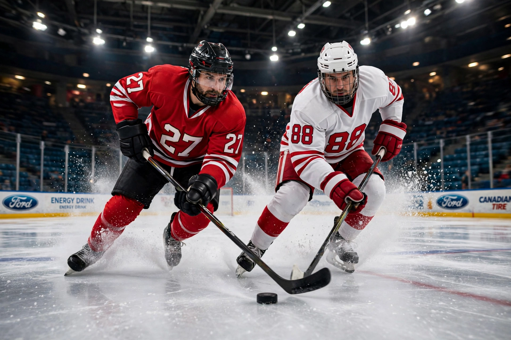

From Wikipedia, the free encyclopedia
| Ice hockey | |
|---|---|
 Ice hockey players racing for the puck on a gleaming rink, spray of ice from their skates | |
| Highest governing body | IIHF |
| First played | 19th century, Montreal, Canada |
| Team members | 6 per side on ice (incl. goaltender) |
| Type | Team sport, winter sport, full-contact |
| Equipment | Puck, sticks, skates, protective gear |
| Venue | Ice hockey rink |
| Olympic | 1920 (men), 1998 (women) |
Ice hockey (simply hockey in Canada, parts of the United States and Latvia) is a team sport played on ice skates, usually on a sheet of ice with markings specific to the sport called a rink. Two opposing teams use ice hockey sticks to control, advance and shoot a vulcanised rubber puck into the other team's goal; each goal is worth one point. The team with the highest score after three 20-minute periods wins.
The modern game developed in Montreal in the 1870s from field hockey and indigenous stick-and-ball games; the first organised indoor game was played there on 3 March 1875. Ice hockey is Canada's national winter sport and one of the most popular sports in northern and eastern Europe and Russia.
The National Hockey League (NHL), founded in 1917, is the premier league (32 teams in North America); its champion receives the Stanley Cup, first awarded in 1893 and the oldest professional sports trophy in North America. Wayne Gretzky, "The Great One", holds most NHL scoring records (including 894 goals and 2,857 points); other legends include Mario Lemieux, Bobby Orr, Gordie Howe and, in the modern game, Sidney Crosby and Connor McDavid. The Soviet "Red Army" team and Canada dominated international hockey through much of the 20th century, a rivalry epitomised by the 1972 Summit Series and the US "Miracle on Ice" in 1980.
Categories: Ice hockey | Team sports | Winter sports